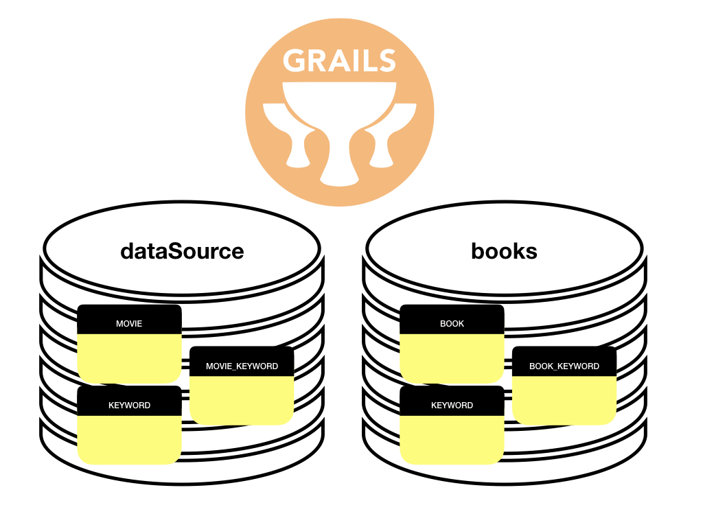

Grails Multi-datasource
Learn how to consume and handle transactions to multiple data sources from a Grails application.
Authors: Sergio del Amo
Grails Version: 3
1 Training
2 Getting Started
In this guide you are going to…
2.1 What you will need
2.2 How to complete the guide
3 Writing the Application
We are writing a Grails Application using the rest-profile which connects to two data sources.

| In previous versions of Grails for multiple data sources a best effort transaction chain was used to attempt to manage a transaction across all configured data sources. As of Grails 3.3 this is disabled as it caused confusion since it isn’t a true XA implementation and also impacts performance as for every transaction you have a transaction for each data source bound regardless if that is the actual requirement. |
3.1 Configuration
Wire-up two data sources in application.yml
link:../snippets/grails-app/conf/application.yml[role=include]3.2 Domain Classes
Create a Movie domain class. If we don’t specify any data source, it gets associated with the default data source.
link:../snippets/grails-app/domain/demo/Movie.groovy[role=include]Create a Book domain class.
link:../snippets/grails-app/domain/demo/Book.groovy[role=include]| 1 | The Book domain class is associated with the books data source. |
Create a Keyword domain class.
link:../snippets/grails-app/domain/demo/Keyword.groovy[role=include]| 1 | The Keyword domain class is associated with to both data sources (dataSource - default one - and books). |
3.3 Services
Create a DataService for Movie domain class.
link:../snippets/grails-app/services/demo/MovieDataService.groovy[role=include]| 1 | you can specify query joins using the @Join annotation. |
If you used @ReadOnly instead of @ReadOnly('books') you will get the exception: org.hibernate.HibernateException: No Session found for current thread
|
Add a regular service:
link:../snippets/grails-app/services/demo/MovieService.groovy[role=include]link:../snippets/grails-app/services/demo/BookDataService.groovy[role=include]| 1 | Specify the data source name in @Transactional and @ReadOnly annotations. |
| 2 | you can specify query joins using the @Join annotation. |
Add a regular service:
link:../snippets/grails-app/services/demo/BookService.groovy[role=include]| 1 | Specify the data source name in @Transactional annotation. |
Add a Keyword services which works with multiple data sources.
The first data source specified in a domain class is the default when not using an explicit namespace. For Keyword,
the data source ConnectionSource.DEFAULT, the first specified, is used by default.
link:../snippets/grails-app/services/demo/KeywordService.groovy[role=include]| 1 | Specify the data source name with withConnection for a query. |
You could have written the books query with a dynamic finder or a criteria query instead of a where query.
Where query: Keyword.where {}.withConnection('books').list()
Dynamic finder: Keyword.books.findAll()
Criteria: Keyword.books.createCriteria().list { }
3.4 Controllers
Create BookController and MovieController. Those consume the services previously implemented.
link:../snippets/grails-app/controllers/demo/SaveBookCommand.groovy[role=include]link:../snippets/grails-app/controllers/demo/BookController.groovy[role=include]link:../snippets/grails-app/controllers/demo/SaveBookCommand.groovy[role=include]link:../snippets/grails-app/controllers/demo/MovieController.groovy[role=include]`
3.5 Views
Add multiple JSON Views to render the output.
link:../snippets/grails-app/views/book/_book.gson[role=include]link:../snippets/grails-app/views/book/index.gson[role=include]link:../snippets/grails-app/views/movie/_movie.gson[role=include]link:../snippets/grails-app/views/movie/index.gson[role=include]link:../snippets/grails-app/views/keyword/index.gson[role=include]3.6 Functional Test
Add grails-datastore-rest-client as a testCompile dependency:
link:../snippets/build.gradle[role=include]Add a functional test which verifies Grails handles Multiple data sources as expected:
link:../snippets/src/integration-test/groovy/demo/MultipleDataSourceSpec.groovy[role=include]